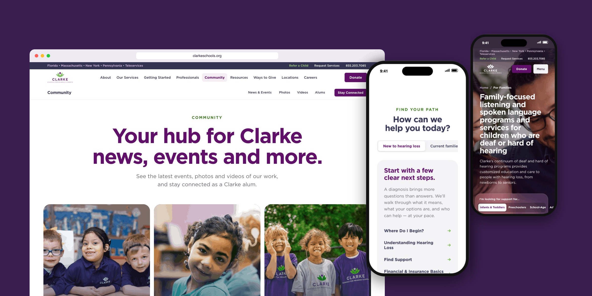
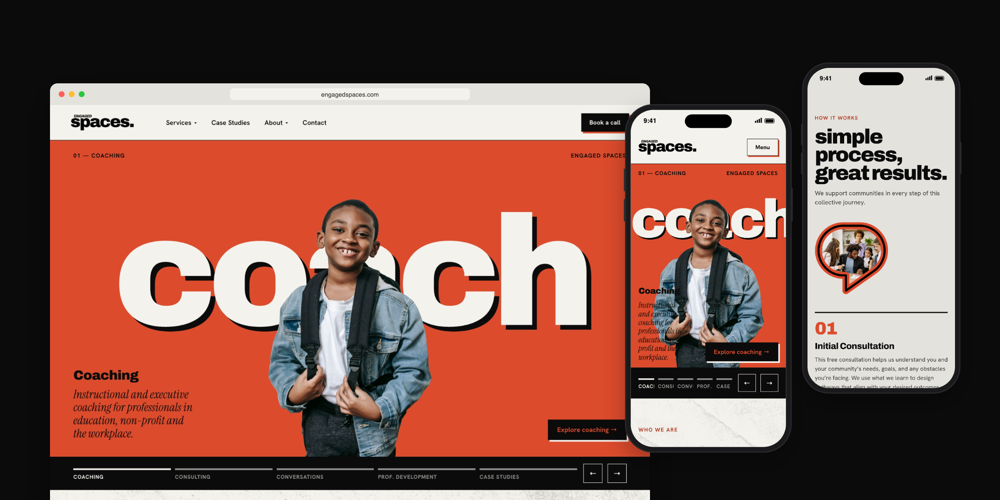
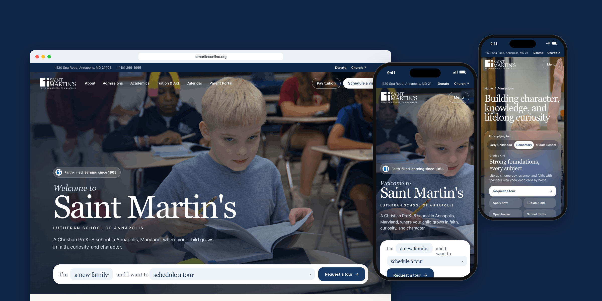
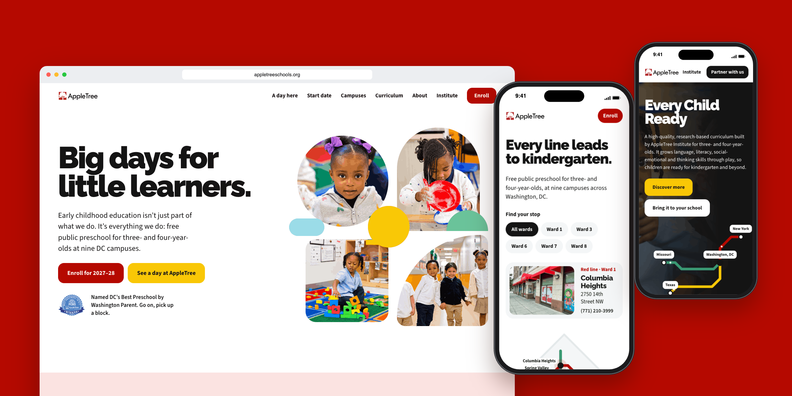
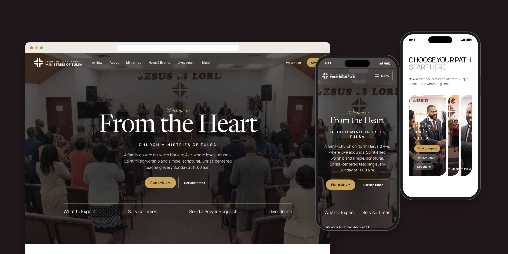
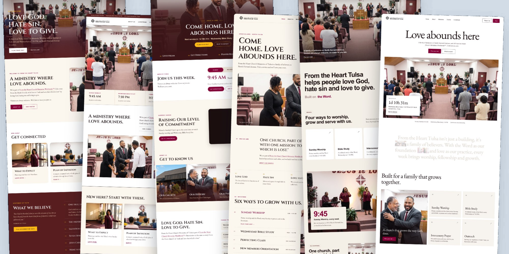
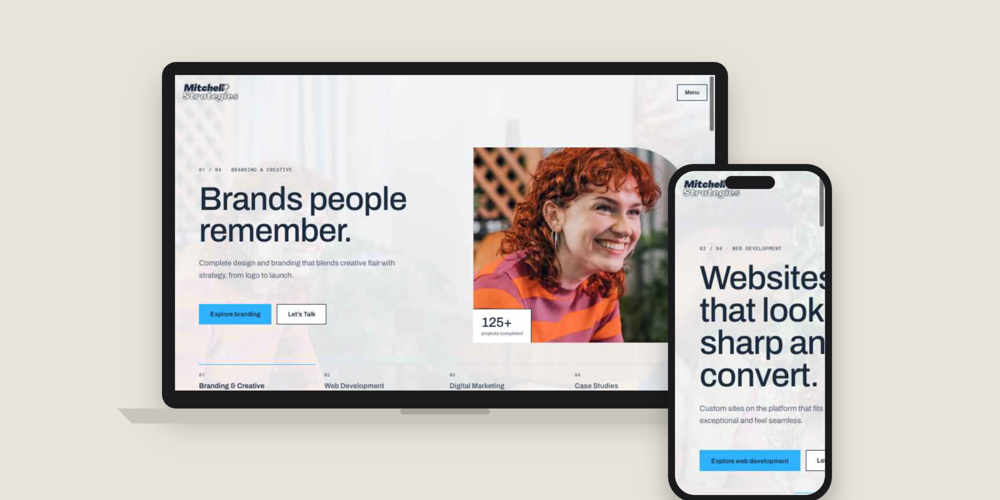
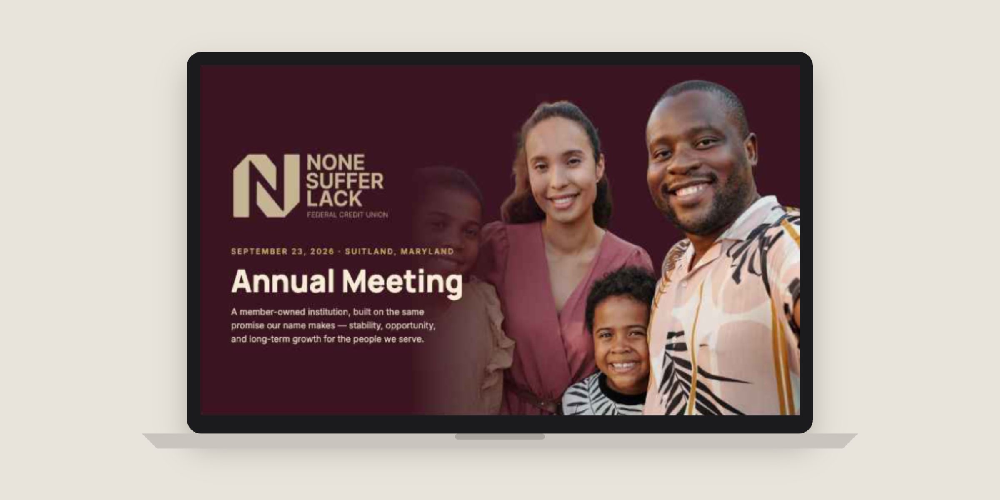

Thomas Mitchell
Interactive work
Live websites, concepts and presentations. Each one opens in full and can be clicked through.

WebsiteClarke Schools for Hearing and Speech WebsiteNone Suffer Lack Federal Credit Union
Website + DeckEngaged Spaces
WebsiteSaint Martin's Lutheran School
WebsiteAppleTree Institute
WebsiteFrom the Heart Church Ministries
Homepage conceptsFrom the Heart Church: Concepts WebsiteDouglas County Master Class Series
WebsiteMitchell Strategies
PresentationNSLFCU Annual Meeting 2026